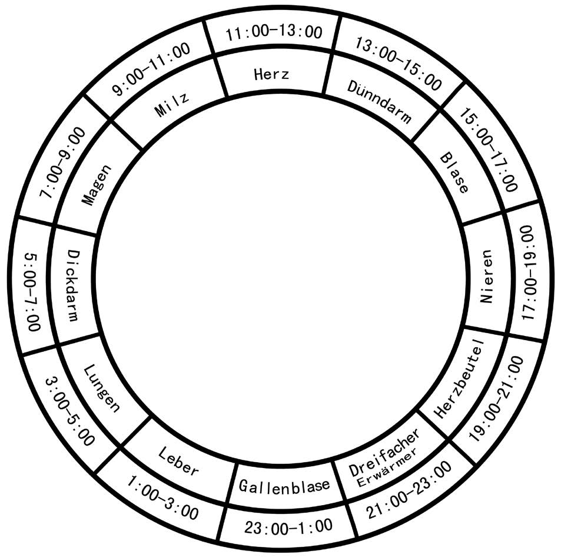

气功实践
气功训练通过静功与动功相结合，调和身体、呼吸与心神，并以放松、宁静、自然为基本原则，促进身心健康与整体和谐。
气功的九大基本原则
“宇宙万物，各循其自然法则。” ——中国哲学
人类（小宇宙）源自宇宙（大宇宙）之气，因此，人的生命信息与宇宙紧密相连。时空条件时刻影响着体内气血的运行。在此背景下——并秉承上述引言的精神——气功修炼也遵循其特定的法则。若能遵循并依循这些法则，便可事半功倍，从而获得健康、宁静与内在力量的持久相伴。反之，若未能领会这些要点或明知故犯，则可能事倍功半，甚至无法达成目标。 违背这些法则还可能引发意想不到的副作用；不过，只要方法得当，这些副作用通常不难化解。 因此，为了优化气功修炼并避免不良后果，充分重视其基本原则至关重要。 下文将介绍如何简便地实现这一点。
1. 适宜的练习时间
气功作为一种与自然界积极能量相通的功法， 原则上在昼夜任何时段均可练习。 然而，鉴于人体作为“小宇宙”与宏观宇宙之间存在对应关系，
某些特定时段尤为适宜练习。气功练习中有四个重要时段：
- 清晨（日出时分；在中国，通常为早晨5点至7点）
- 傍晚（日落时分；在中国，通常为下午5点至7点）
- 正午（上午11点至下午1点）
- 子夜（晚上11点至凌晨1点）
清晨，万物随太阳一同苏醒。 此时练习气功，能让我们极好地汲取自然界中相应的积极能量。 傍晚时分，自然界同样能对我们产生有益的影响。 正午前后，阳气达到顶峰，随后开始逐渐向阴气转化； 子夜时分，阴气达到极盛，随即开始向阳气转化。 在这些时段进行练习，通常效果显著。

2. 最佳练功地点
在进行气功练习时，人体磁场与周围环境磁场之间通常会建立起强烈的联系，并伴随着两者之间自动的、双向的信息交换。因此，除了考虑个人练功的最佳时间外，精心选择练功地点也十分重要。 气功既可以在户外大自然中练习，也可以在室内进行。强烈推荐在靠近大面积水域的地方练习，例如宽阔的河流、浩瀚的湖泊、大海或瀑布旁。高山、森林和草地也是极佳的场所，这些地方空气清新、纯净。在这些环境中，人与自然的能量交换尤为强烈，有助于吸收正能量。不过，应避免在树木茂密之处于日出前或日落后进行练习。
3. 最佳练功朝向
进行气功锻炼时，朝向的选择可根据具体练功环境灵活决定。不过，若能面向特定的方位，有时会更有益处。事实上，早在古代中国，人们就已高度重视练功时的方位选择，以期获得最佳的养生功效。例如，《黄帝内经》便建议，针对肾虚问题进行调理的练习者宜面向北方。沿袭这一传统，直至今日，气功大师们在指导练习时——无论采取站、坐还是卧式——依然十分讲究朝向的选择。
4. 气功练习中色彩的意义
长期以来，色彩在气功练习中发挥着重要作用。 色彩具有不同的波长，能以特定方式影响人体，引发独特的生理与心理反应。例如，色彩可分为“冷色”与“暖色”两大类。冷色包括蓝色、紫色及各种深浅的绿色；它们具有镇静与调和的功效，能帮助练习者迅速进入内心宁静的状态。暖色则包括红色、橙色、黄色和棕色；这些色彩具有活跃与刺激的作用，因此不太适合在练习中营造宁静的氛围。 在气功理论中，色彩对于增强人体的免疫防御能力及（自我）修复能力也至关重要，因为某些色调与特定的人体脏腑有着直接的对应关系。例如，绿色对应肝脏，红色对应心脏，黄色对应脾胃，白色对应肺脏，深紫色则对应肾脏。 练习者可选用那些能带来舒适感、有益身心健康的特定色调，以辅助气功练习。
源于自然的色彩——尤其是植物的色彩——通常比人造色彩效果更佳。自然色彩能更直接地刺激神经系统，并能更迅速地恢复身心平衡。
5. 适宜的温度
适宜的环境温度有助于人体维持阴阳平衡，并促进气血的顺畅流通。早在明代（1368–1644），医家张景岳便强调，舒适的温度有利于气血在全身畅通无阻地运行。由此可知，寒、热、凉、温等不同温度，会以独特而直接的方式影响气血的流动与分布。据气功大师所述，练习气功的理想温度在15°C至25°C之间。
这一适宜的温度范围为气功练习提供了重要的指导原则。由于在低温环境下难以实现“小周天”与“大周天”经络中的气血畅通，因此应尽可能避免在冬季进行户外练习。相比之下，夏季气血在经络中的流动更为顺畅，通过练习能更直接地激活小周天与大周天。不过，在酷热天气下，练习时宜选择凉爽舒适或有树荫遮蔽的场所，同时应避免穿堂风直吹或使用风扇降温。
6. 光线的重要性
天然阳光在人类生活中始终发挥着至关重要的作用。 它滋养作物生长，温暖我们的身体，并直接影响着我们的身心健康。 气功传统也蕴含着这一理念：若想保持健康，切不可将自身与阳光隔绝。 自然光是气功练习中一项重要且有益的要素。因此，练习时应选择光线条件良好的场所。 不过，务必避免身体长时间暴露在强烈的直射阳光下。 过度暴露于强光之下并不适宜，因为这容易导致精神疲惫。 在刺眼的光线下练习，会使人难以达到内心宁静和谐的境界。
综上所述，光线的强度与日照程度应保持适中，并让人感到舒适惬意。 在漆黑的环境中练习通常并不理想。夜间练习时，月光、烛光或柔和的灯光都是很好的伴侣。 若使用人工照明，舒适宜人的光线有助于身心轻松进入气功特有的宁静状态。
7. 风的影响
夏日微风拂过时发出的沙沙声，往往能给人带来愉悦与宁静之感；然而，强烈的风暴却容易让人感到不安与烦躁。这些简单的例子表明，风力的大小——连同其伴随的声波与气流——会直接影响人体的神经系统。在进行气功练习时，应当考虑到这一点。虽然通常认为在微风天气练功有益，但在大风或风暴天气下，保持专注则较为困难；此时想要进入身心宁静的状态更具挑战性，即便进入了该状态，其深度也可能大打折扣。
气功大师建议，当风力达到2级时，应寻找避风之处练习；风力达到5级时，最好转入室内练习；而当风力达到8级时，则应暂停训练。一句气功谚语很好地总结了这些原则：“避强风如避箭。”
强风不仅会扰乱心神，还会迅速带走体温，从而降低练功的效果。因此，在训练期间或结束后——尤其是身体出汗时——务必注意防风，避免遭受过强气流的侵袭。在室内练习时，也应避免穿堂风以及冷热气流的直接吹袭。冷风容易导致穴位与毛孔闭塞，而热风则会迅速引发疲劳。
8. 湿度的影响
适度的湿度对人体健康至关重要。 它有助于防止黏膜干燥，保持气道通畅，并确保空气在体内外自由流通。空气过于干燥容易刺激呼吸道，使其更易患病或受感染。过度干燥还会导致皮肤迅速干裂，从而削弱其天然保护功能。反之，湿度过高会阻碍人体通过排汗进行自然体温调节，并可能诱发哮喘和特应性皮炎等病症。 湿度会以多种方式直接影响气功练习的效果。因此，练习时应确保湿度适宜。在阴雨、大雾或湿气上升的天气（尤其是湿度达到98%甚至100%时），最好避免在户外练习。也不建议在潮湿的房间内练习，因为除了对身体的直接影响外，还存在接触霉菌孢子的风险。不过，如果室内空气过于干燥，可以通过在房间里放一碗水等方式加以改善。
通常情况下，在大雨、雷暴或浓雾期间，建议暂时停止练习静功（或暂停正在进行的练习）。 由于人作为“小宇宙”，直接受“大宇宙”外力的影响，因此这一建议同样适用于室内和室外的练习。
居住空间的推荐湿度为45%–55%，无论在户外还是室内。如果自然界处于失衡状态， 人类也无法获得真正深层、宁静且具有疗愈作用的和谐。 不过，进行轻柔的肢体活动通常没有问题。
9. 练习前的有意识准备
除了选择练习时间、地点和视线朝向，以及考虑颜色、温度、光线、风力和湿度等环境因素外，还有其他因素对于实现最佳气功效果至关重要。这些因素既包括身体层面的考量，也涵盖了情绪状态等心理层面的因素。 为了在放松的状态下开始练习，遵循几项简单的准备原则会很有帮助。例如，练习时不宜处于饥饿或过饱的状态。其中的道理很简单：气功练习会刺激胃液分泌及胃肠蠕动。饥饿时练习可能导致令人不适的胃部反应；而在过饱状态下，消化过程需要消耗大量能量，但气功练习会将能量（气）更多地引导至体表，从而可能影响消化功能。因此，安排练习时间时，应确保与进餐之间留有充足的间隔。建议在练习前后各预留约30分钟到1小时的缓冲时间。通过细心尝试，每个人都能轻松找到最适合自己的练习时机。
练习前的饮水量应适度；在练习前后，不宜立即饮用冷饮或冷水。此外，在气功练习前后的约30分钟内，应避免彻底洗手或用冷水淋浴。为避免练习中途因尿意而中断，建议在开始前先如厕。如条件允许，练习前应避免饮酒、浓咖啡及某些类型的茶。同样应避免摄入其他会影响意识、正常生理机能或身体协调性的物质——即使因习惯而使人不再明显察觉其影响，也不例外。要获得深度放松与疗愈功效，需要保持头脑清醒，并确保身体尽可能不受外界因素干扰。 若需服药，根据具体健康状况，可能需要咨询气功大师或受过专业训练的指导师，对练习方式进行个性化调整。此类调整可能包括简化动作练习或采用特定的静修形式。
为了获得最佳的健康益处，在练习时保持专注与开放的心态至关重要。如果您感到极度疲惫，明智的做法是先休息或小睡片刻，待身心恢复活力后再开始气功练习。若情绪波动较大——例如感到极度愤怒或悲伤——通常最好先平复情绪，将练习推迟到稍后再进行。 女性在经期可根据自身感受，选择改做简化动作或坐式练习。若期间出现任何不适，可暂停练习数日；若感觉身体状况良好且精力充沛，则可照常练习。孕期也可进行简化动作以及坐式或卧式练习。
前文阐述的气功基本原则，可作为您制定个人练习计划的指导。这些原则虽重要，但不应被视为绝对的硬性规定，而应看作是确保练习成效的简要指引。遵循这些原则，有助于增强练习对健康的积极效应，并提升日常训练的乐趣。如此一来，实践经验与理论知识相辅相成，形成一种促进身心整体健康的综合练习方式。
气功九大原则简介
“气功”一词涵盖了众多的流派与功法体系， 其中一些流派彼此间存在显著差异。 每种功法都有其独特的原则与 特点。尽管气功流派繁多，但它们都有一个共同点， 即围绕“气”（生命能量）进行修炼。各流派的功法 均以增强与培育“气”为基础， 从而自然地锻炼身心机能。
此外，各种流派与功法共有的特性， 体现在以下重要的 基本原则之中：
- 源于信任的力量
- 将修德视为一种与生俱来的自然力量
- 身心并修
- 循序渐进的练习
- 放松、宁静与自然
- 动静结合
- 意念引导气机运行
- 上虚下实
- 功法练习与生命修养的和谐融合
这些基本原则为练习提供了重要指导， 既便于初学者入门， 也为进阶练习者提供了深化修习的宝贵契机。 这些原则具有整体性（下文将作详尽阐述）， 使练习者能够直观地体验气功 与人类自然及社会环境之间的联系。 遵循这些基本原则，不仅能提升练习成效， 还能进一步增强其对身心健康的 调和与疗愈作用。
气功修炼的三大支柱
经过数千年的发展演变， 如今已形成了众多各具特色且正统的 气功流派与功法。尽管各类功法的 适用领域和作用方式往往各不相同， 但它们都包含两个核心要素：
- 动中求静
- 静中求动
此外，历代气功大师的实践经验——以及 当代大师的真知灼见——都强调了 将上述两个核心要素与另外三个方面 相结合的重要性：
- 调身（调节形体）：通过姿势与动作，实现身心的放松、宁静与自然状态
- 调息（调节呼吸）：运用各种呼吸技法进行调节
- 调心（调节意念）：通过专注与意象（观想）进行调节
这三个方面构成了所有气功修炼的 三大重要支柱。它们彼此紧密相连， 相互影响，并相辅相成。
当这三个方面和谐统一时，气功的功效便能得到充分发挥，从而更容易实现练习的核心目标。众所周知，这些目标主要包括防病治病。此外，它还涵盖了对大脑潜能的开发利用，表现为心智能力的提升、智力的增强以及智慧的增长。随着这些目标的逐步实现，人们最终能够获得长久、健康且和谐的生活。
调身练习
旨在调节身体的练习，在中文里被称为“调身”。其中，“调”字主要意指“调节”；而“身”字所承载的概念内涵丰富，涵盖了“肉体”、“自我”以及“人的一生”等多重含义。在中国哲学中，身体是精神的居所。若想向内探寻，身体便是连接精神的天然起点。因此，调身练习有助于人们找到通往自身精神的路径。
调节身体有助于为进入放松、宁静与自然的状态铺平道路。通过气功练习，身体会进入一种自然状态，这对各项生理机能均有积极的增强作用。精神的专注与心境的平定，进一步辅助引导全身进入放松与休憩的状态；这一过程同时也伴随着呼吸的和谐调节。保持正确的姿势——即“自然”的姿态——是成功进行气功练习的必要前提。
气功练习中的姿势可归纳为以下几类：
- 站式
- 坐式
- 卧式
- 行式
在这四大类姿势中，又包含多种具体的体式，每种体式都有其独特的功效。选择何种姿势与体式，应经过审慎、合乎逻辑与理性的考量。具体选择取决于练习者的健康状况、性别、年龄、个人特质与习惯，以及环境和时间等因素。练习内容的选择始终遵循气功的基本前提与原则，其中“放松、宁静、自然”以及“循序渐进”的原则尤为重要。若能用心遵循这些指导，练习过程中便会产生舒适的体感，并有助于实现柔和、细微、均匀、深长且连绵不断的呼吸。这种呼吸方式能确保生理活动中的能量消耗适度——避免过度用力——并促进身体进入气功特有的休憩状态。选择适宜的姿势与体式是练习过程中的首要关键。若缺乏这一基础，气功练习便无法充分发挥其功效，或仅能收效甚微；反之，若选择得当，练习则能迅速且有效地见效。
特定的姿势与体位往往与各种病症的症状直接相关。例如，通常建议高血压或神经系统较弱的人群进行站立式练习；而对于长期患病或体质虚弱者，则通常建议采取卧位进行基础练习。如果练习者能够保持坐姿（哪怕时间较短），便可在卧位练习的基础上增加坐位练习。随着身体力量的逐渐增强，应相应调整姿势与体位，加入坐姿、站姿或行进间的训练。对于健康人群，通常选择站立式练习（并结合动态动作），以维持并进一步增强身心素质；同时，也可辅以坐位或卧位练习。无论采取何种姿势，确保练习者全程感到舒适至关重要。当姿势适宜时，呼吸通常会变得平稳均匀，身体的放松状态也会加深；反之，僵硬的姿势、过度用力或肌肉紧张则会产生干扰，从而影响练习效果。
总的来说，选择适宜的姿势与体位至关重要。无论是选择姿势还是进行具体练习，都应遵循一些共同原则，包括保持自然放松与心境平和，以及采取缓慢、循序渐进的方式。基于这些准则，练习内容应根据习练者的具体需求与健康状况进行调整，同时也要考虑到可能出现的变化。因此，选择正确的姿势与体位不能一概而论，而需要进行审慎、合乎逻辑且灵活的调整。尽管各种姿势与体位具有某些共性功能，但它们各自也有独特的运作方式。唯有将练习与个人状况、外部环境及气功原理相结合，才能充分发挥这些练习的积极功效。
调节呼吸的练习
呼吸是人体与自然界进行能量（气）交换的过程。一切生命体都必须通过呼吸来维持生命活动。中文里“调息”一词，揭示了呼吸超越单纯生物学层面的另一重内涵。“调息”不仅指生理层面的调节，更关乎呼吸中所蕴含的生命能量。 呼吸是生命的主要表征。一句中国谚语恰如其分地指出：“若欲探究生命，当先研究呼吸。”呼吸构成了意识与潜意识、身体与心智之间的直接桥梁。尽管呼吸通常是自动进行的，但它也是为数不多的、人类能够通过意念和观想加以影响的生理过程之一。这种自主影响的能力，使得人们能够有意识地调节呼吸。例如，在气功练习中，可以改变呼吸的频率、深度与力度。通过这种方式，呼吸系统得到整体锻炼，并经由神经通路对其他器官系统产生积极的反射性影响。
调心练习
调心练习——在中文里被称为“调心”——就其基础层面而言，涉及对意识与潜意识层面的调节。其目标在于陶冶并平息意识层面的思绪，从而最终实现“天人合一”的境界。此类修习的重点在于心智层面；通过专注与观想，修习者的意识思绪与情感得以与修习本身达成和谐统一。由此，修习者可进入一种宁静的状态，并实现心智“先天”与“后天”层面的联通。
在中国，调心练习在传统上也被称为“调心”或“调神”（注：此处原文虽为“调心”，但结合语境，亦涵盖了“调神”的内涵）。在中医哲学中，心被视为心智的主宰之所，因而在这些修习中发挥着至关重要的作用。此外，心被视为人体的中心——既是真理向外辐射的源头，也是生命活动的指引。时至今日，在中国文化中，心与智（或心与神）仍被视为一个统一的整体。心与身、思绪与情感、思想与行动、逻辑与直觉，彼此之间均不割裂。调心练习尤为注重修习者内在的心态以及对心智活动的主动引导。
调身、调息与调心练习之间的关系
无论修习何种具体体系，调身、调息与调心都是气功练习的三大支柱。尽管它们对身体的作用表现各异，但所有练习体系都涵盖了气运行的四种基本形式：升、降、开、合。这三大支柱相互影响、相互支撑、相互调节，从而维持着一种持续的动态互动状态。
放松且自然的姿势有助于实现通畅、平稳的呼吸。而根据个人体质与练习目标所选用的呼吸方法，又能进一步促进身体的深度放松与气的顺畅流通。要找到并有效运用适宜的姿势与呼吸方法，需要意识的参与及意象（观想）的运用。因此，每一项练习都既包含身体层面的动作，也包含意识层面的活动。意识活动在气功练习中起着核心作用。然而，意识活动不能孤立看待，它直接受姿势与呼吸的影响。若身体未能放松或呼吸急促，心跳便会随之加快，导致紧张与注意力分散，进而削弱练习的成效。
综上所述，有效的气功练习有赖于对身、息、心的协同调节。因此，在练习过程中应兼顾这三个方面，尽管根据具体气功流派的不同，三者的侧重点会有所差异。
气功练习：静与动
正宗气功之所以具有非凡的功效，其基础在于通过练习来调和身体、呼吸与心神。 具体的练习方法可分为“静功”与“动功”两大类。
静功
练习者需在较长的一段时间内，保持身体处于某种特定的姿势，安详且放松。 在此过程中，血液循环会显著活跃起来，各脏腑的功能也能得到调和。 气血得以畅通无阻、充沛有力地运行。因此，“外静内动”便是此类气功的显著特征。
动功
动功通过肢体运动，能够激发并促进气血在整个机体内的输布与运行。 与此同时，将意念专注于动作与呼吸之上，有助于平息杂念，安抚心神。 因此，“外动内静”便是此类气功的显著特征。
一套完善且均衡的气功训练体系，通常应包含静功与动功两类练习。 具体的练习环节可根据习练者个人的体质状况进行个性化调整。 如此一来，无论老幼、体强体弱，亦或身康身病，各类人群皆能平等地从中获益， 尽享气功所带来的积极功效。
气功训练的关键要素
训练过程应始于几项舒缓练习，其作用在于调整身体状态以适应后续练习， 并使心神宁静。典型的舒缓练习包括抖动、转髋以及按摩。
随后进行的是规律的动功练习，也可称为动态冥想，旨在激活气血的运行。 通过练习，经络中的阻滞得以消解，重要的穴位也随之开启。 由此，人体之气与自然之气便能实现相互交流。
静功练习绝非仅仅是单纯的放松。通过长时间保持特定的身体姿势， 气血的运行将得到强烈的激活。许多习练者反馈称，正是由于这种内在的生理活动， 他们在练习过程中会产生一种强烈的温热感。静功练习既可采取站立姿势， 亦可坐卧进行。
所有练习均遵循“放松、宁静与自然”的基本原则。 训练通常以特定的收功环节作结，包括调息练习、轻柔按摩，以及表达感恩的仪式。
气功的功效
整体观
规律地练习气功能够协调并稳定身体各项机能，促进身心之间更顺畅的交流与互动。 此外，正统气功的修炼法门有助于提升修炼者的品德修养， 从而对其整个社会环境产生直接且积极的影响。
气功还能增强人们对生机勃勃的大自然的敬畏之心与关注程度。 正因如此，气功对生活的方方面面都能产生一种整体性的功效。
科学、循序渐进地练习气功，并根据自身状况合理安排时间、环境与方式，有助于获得更安全、更持久的修炼效果。
气功修炼常见问题
练习时间应持续多久？频率应如何安排？
气功练习的效果通常会随着练习时间的积累而逐渐显现，但应避免练至筋疲力尽。 初学者或体弱者可从每次 5 至 10 分钟开始，随后循序渐进地延长至 35 分钟、一小时甚至更长。若单次练习时间充足，一般每天练习一次即可； 如有需要，也可根据自身情况增加练习次数。
对于练习地点、时间或朝向，是否有特殊要求？
建议选择环境安静、空气清新的场所进行练习， 理想的时间为清晨、正午或傍晚。 传统上认为面向南方或北方较为适宜， 有助于保持身心稳定，进入练功状态。
何时是最佳的练习时机？
初学者无需过分拘泥于地点或朝向，可根据实际情况灵活安排。 无论初学者还是长期习练者，都应避免迎风而立。
原则上，气功可在一天中的任何时间练习。 若条件允许，较推荐的时段为清晨 5:00–7:00、 中午 11:00–13:00、傍晚 17:00–19:00， 以及夜间 23:00–1:00。
在传统中医理论中，不同经络于不同时间最为活跃， 因此也可依据个人健康状况， 选择与特定经络运行规律相配合的练习时段。
哪些情况下不宜练习？
气功强调人与自然环境的协调，因此遇到狂风、雷雨、冰雹、 酷暑、高温、浓雾等恶劣天气时， 不宜进行练习，无论是在户外还是室内。
当身体极度疲劳、情绪剧烈波动、 或处于空腹及过饱状态时，也应暂缓练习。 建议饭后等待 30 至 60 分钟再开始练功， 练功结束后亦应间隔 30 至 60 分钟再进食。
哪些情况下需要调整练习方式？
正在接受药物治疗或身体存在特殊状况的练习者， 应根据自身情况调整练习内容， 并在气功大师或授权教师指导下进行。 调整方式可包括减少动态动作、 或改练适合自身状况的静功。
女性经期一般可以继续练习， 也可根据身体状况适当减少动作、 改为坐姿练习；若出现不适，应暂停数日。 孕期女性同样可练习经过简化的动功， 或采用坐姿、卧姿等更加舒适、安全的方式进行。
什么样的衣着适合练习？
建议穿着宽松、舒适且不影响活动的衣物， 鞋子应轻便合脚，不宜过紧。 为避免影响动作和身体放松， 练习前应摘下手表及各类饰品， 保持身体自然、轻松的状态。